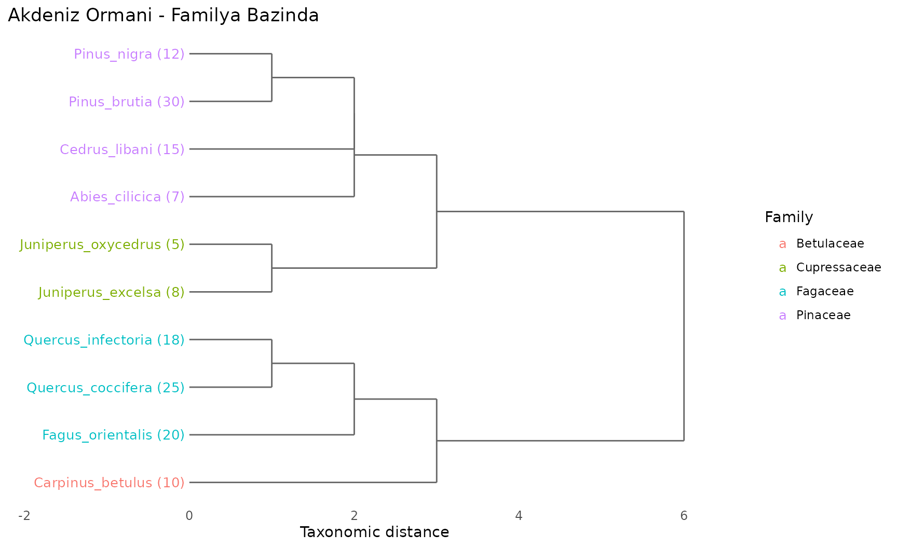
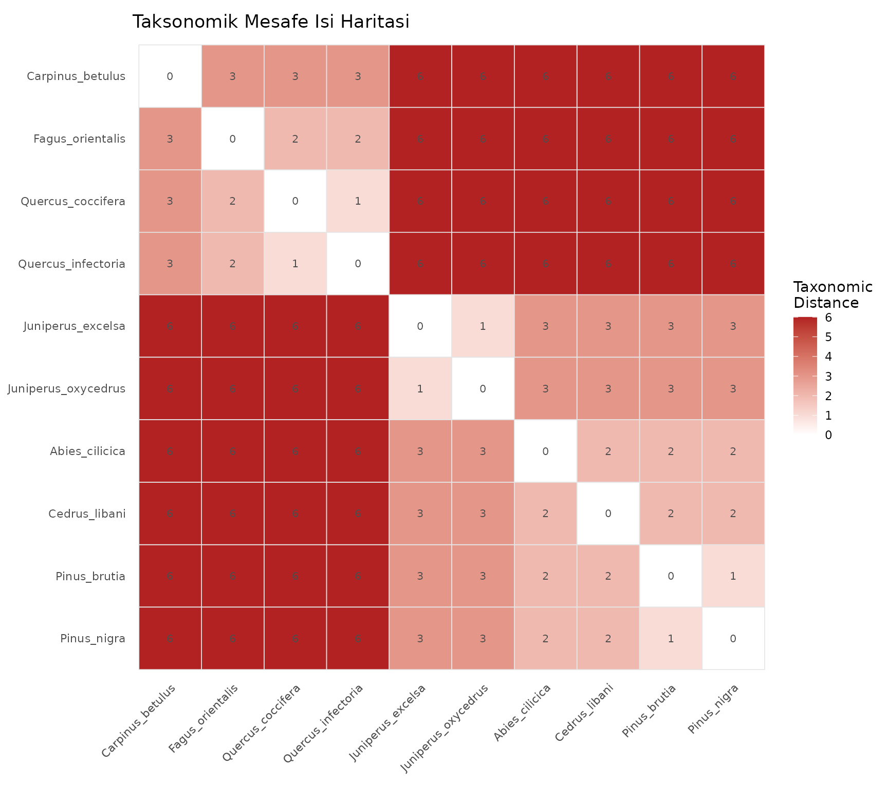
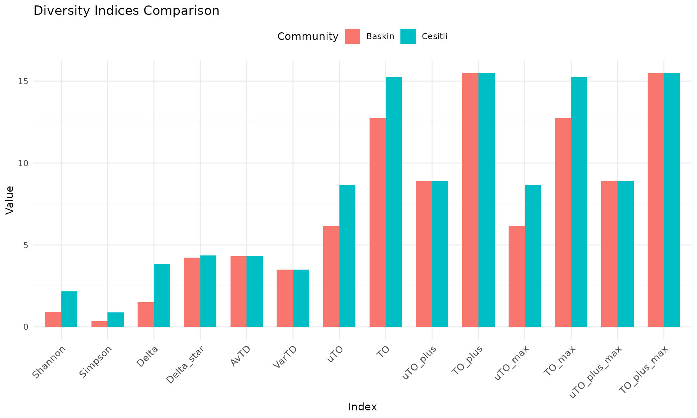
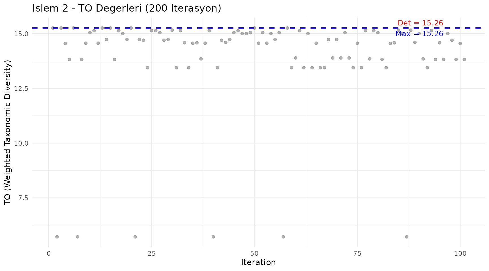
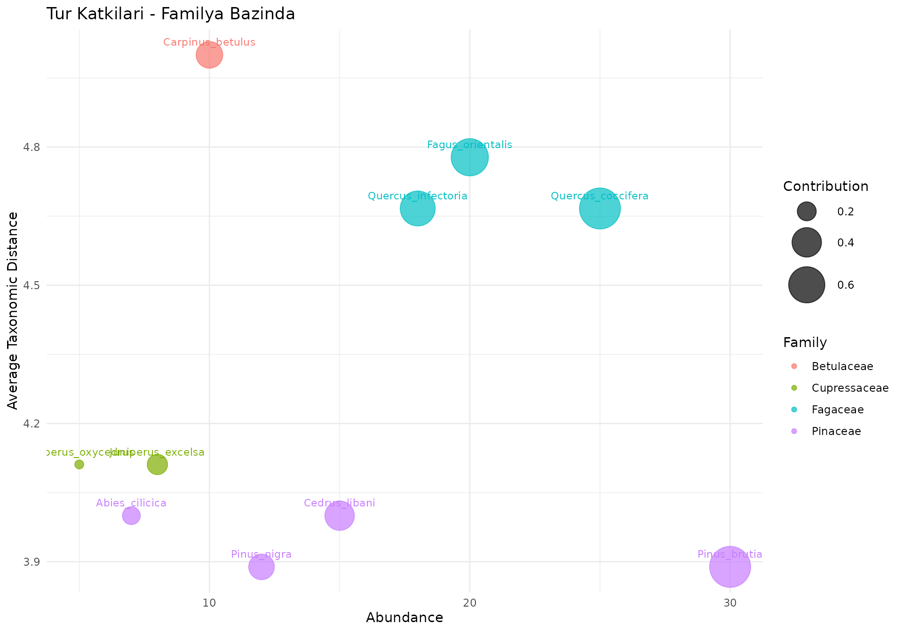
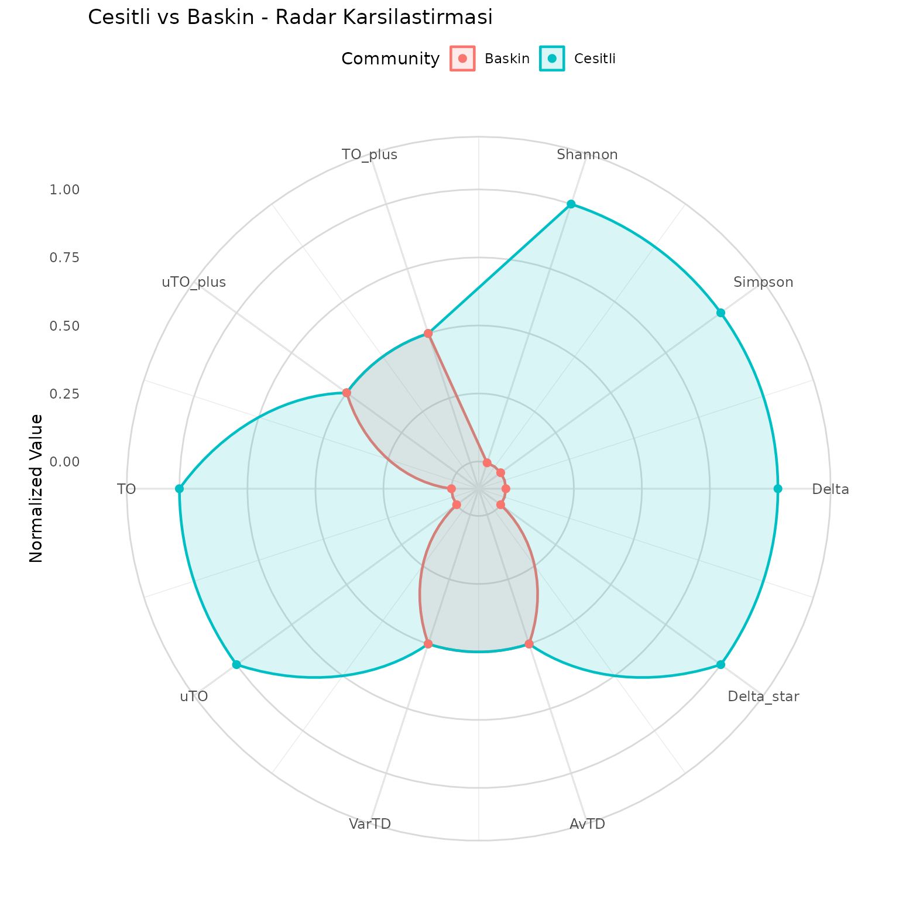
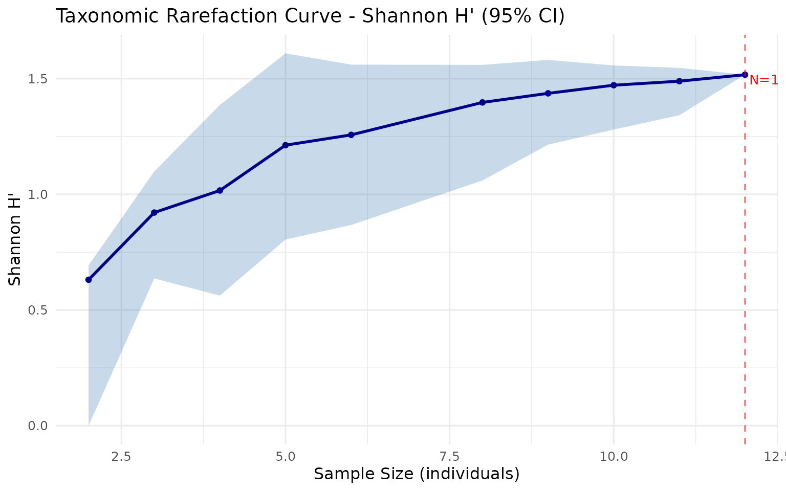

Bu Paket Ne Ise Yarar?
taxdiv paketi, ekolojik topluluklarda taksonomik cesitliligi hesaplamak icin yazilmis bir R paketidir.
Klasik cesitlilik indeksleri (Shannon, Simpson) sadece tur bolluklarini dikkate alir. Ancak iki toplulukta ayni sayida tur olsa bile, birinde tum turler ayni familyadan, digerinde farkli takimlardan olabilir. Taksonomik cesitlilik indeksleri bu farki yakalayabilir.
Pakette uc ana yaklasim vardir:
- Klasik indeksler: Shannon ve Simpson
- Clarke & Warwick taksonomik ayirt edicilik: Delta, Delta*, AvTD, VarTD
- Ozkan (2018) Deng entropisi tabanli: pTO (uTO, TO, uTO+, TO+)
Ornek Veri: Akdeniz Ormani Toplulugu
Orneklerimizde 10 turlu hayali bir Akdeniz ormani toplulugu kullanacagiz. Her turun bolluk degeri (birey sayisi) ve 7 taksonomik seviyesi vardir.
# Tur bolluklari (ornek alanindaki birey sayisi)
topluluk <- c(
Quercus_coccifera = 25,
Quercus_infectoria = 18,
Pinus_brutia = 30,
Pinus_nigra = 12,
Juniperus_excelsa = 8,
Juniperus_oxycedrus = 5,
Cedrus_libani = 15,
Abies_cilicica = 7,
Fagus_orientalis = 20,
Carpinus_betulus = 10
)
# Taksonomik hiyerarsi (7 seviye: Tur, Cins, Familya, Takim, Sinif, Bolum, Alem)
agac <- build_tax_tree(
species = names(topluluk),
Genus = c("Quercus", "Quercus", "Pinus", "Pinus",
"Juniperus", "Juniperus", "Cedrus", "Abies",
"Fagus", "Carpinus"),
Family = c("Fagaceae", "Fagaceae", "Pinaceae", "Pinaceae",
"Cupressaceae", "Cupressaceae", "Pinaceae", "Pinaceae",
"Fagaceae", "Betulaceae"),
Order = c("Fagales", "Fagales", "Pinales", "Pinales",
"Pinales", "Pinales", "Pinales", "Pinales",
"Fagales", "Fagales"),
Class = c("Magnoliopsida", "Magnoliopsida", "Pinopsida", "Pinopsida",
"Pinopsida", "Pinopsida", "Pinopsida", "Pinopsida",
"Magnoliopsida", "Magnoliopsida"),
Phylum = c("Magnoliophyta", "Magnoliophyta", "Pinophyta", "Pinophyta",
"Pinophyta", "Pinophyta", "Pinophyta", "Pinophyta",
"Magnoliophyta", "Magnoliophyta"),
Kingdom = c("Plantae", "Plantae", "Plantae", "Plantae",
"Plantae", "Plantae", "Plantae", "Plantae",
"Plantae", "Plantae")
)
agac
#> Species Genus Family Order Class
#> 1 Quercus_coccifera Quercus Fagaceae Fagales Magnoliopsida
#> 2 Quercus_infectoria Quercus Fagaceae Fagales Magnoliopsida
#> 3 Pinus_brutia Pinus Pinaceae Pinales Pinopsida
#> 4 Pinus_nigra Pinus Pinaceae Pinales Pinopsida
#> 5 Juniperus_excelsa Juniperus Cupressaceae Pinales Pinopsida
#> 6 Juniperus_oxycedrus Juniperus Cupressaceae Pinales Pinopsida
#> 7 Cedrus_libani Cedrus Pinaceae Pinales Pinopsida
#> 8 Abies_cilicica Abies Pinaceae Pinales Pinopsida
#> 9 Fagus_orientalis Fagus Fagaceae Fagales Magnoliopsida
#> 10 Carpinus_betulus Carpinus Betulaceae Fagales Magnoliopsida
#> Phylum Kingdom
#> 1 Magnoliophyta Plantae
#> 2 Magnoliophyta Plantae
#> 3 Pinophyta Plantae
#> 4 Pinophyta Plantae
#> 5 Pinophyta Plantae
#> 6 Pinophyta Plantae
#> 7 Pinophyta Plantae
#> 8 Pinophyta Plantae
#> 9 Magnoliophyta Plantae
#> 10 Magnoliophyta Plantaebuild_tax_tree() fonksiyonu turleri ve taksonomik
seviyelerini bir data frame olarak dondurur. Ilk sutun tur isimleri,
sonrakiler en dusukten en yuksege sirali taksonomik ranklar (Cins ->
Familya -> Takim -> Sinif -> Bolum -> Alem).
Adim 1: Klasik Cesitlilik Indeksleri
Shannon ve Simpson indeksleri sadece tur bolluklarini kullanir. Taksonomik yapiyi dikkate almazlar.
# Shannon cesitliligi (dogal logaritma)
H <- shannon(topluluk)
cat("Shannon H':", round(H, 4), "\n")
#> Shannon H': 2.1692
# Simpson indeksleri
D <- simpson(topluluk, type = "dominance") # Baskinlik
GS <- simpson(topluluk, type = "gini_simpson") # 1 - D
inv_D <- simpson(topluluk, type = "inverse") # 1 / D
cat("Simpson baskinlik (D):", round(D, 4), "\n")
#> Simpson baskinlik (D): 0.1269
cat("Gini-Simpson (1-D):", round(GS, 4), "\n")
#> Gini-Simpson (1-D): 0.8731
cat("Ters Simpson (1/D):", round(inv_D, 4), "\n")
#> Ters Simpson (1/D): 7.8782Yorum: Shannon degeri ne kadar yuksekse topluluk o kadar cesitlidir. Simpson baskinlik degeri ne kadar dusukse o kadar iyi dagilim vardir.
Adim 2: Taksonomik Mesafe Matrisi
Taksonomik cesitliligi hesaplamadan once turler arasi taksonomik mesafeyi hesaplamamiz gerekir. Bu mesafe, iki turun taksonomik hiyerarsideki ilk ortak atalarinin seviyesine gore belirlenir.
mesafe <- tax_distance_matrix(agac)
round(mesafe, 1)
#> Quercus_coccifera Quercus_infectoria Pinus_brutia
#> Quercus_coccifera 0 1 6
#> Quercus_infectoria 1 0 6
#> Pinus_brutia 6 6 0
#> Pinus_nigra 6 6 1
#> Juniperus_excelsa 6 6 3
#> Juniperus_oxycedrus 6 6 3
#> Cedrus_libani 6 6 2
#> Abies_cilicica 6 6 2
#> Fagus_orientalis 2 2 6
#> Carpinus_betulus 3 3 6
#> Pinus_nigra Juniperus_excelsa Juniperus_oxycedrus
#> Quercus_coccifera 6 6 6
#> Quercus_infectoria 6 6 6
#> Pinus_brutia 1 3 3
#> Pinus_nigra 0 3 3
#> Juniperus_excelsa 3 0 1
#> Juniperus_oxycedrus 3 1 0
#> Cedrus_libani 2 3 3
#> Abies_cilicica 2 3 3
#> Fagus_orientalis 6 6 6
#> Carpinus_betulus 6 6 6
#> Cedrus_libani Abies_cilicica Fagus_orientalis
#> Quercus_coccifera 6 6 2
#> Quercus_infectoria 6 6 2
#> Pinus_brutia 2 2 6
#> Pinus_nigra 2 2 6
#> Juniperus_excelsa 3 3 6
#> Juniperus_oxycedrus 3 3 6
#> Cedrus_libani 0 2 6
#> Abies_cilicica 2 0 6
#> Fagus_orientalis 6 6 0
#> Carpinus_betulus 6 6 3
#> Carpinus_betulus
#> Quercus_coccifera 3
#> Quercus_infectoria 3
#> Pinus_brutia 6
#> Pinus_nigra 6
#> Juniperus_excelsa 6
#> Juniperus_oxycedrus 6
#> Cedrus_libani 6
#> Abies_cilicica 6
#> Fagus_orientalis 3
#> Carpinus_betulus 0Nasil okunur:
- 0 = Ayni tur (kosegen)
- 1 = Ayni cins, farkli tur (ornegin Pinus brutia - Pinus nigra)
- 2 = Ayni familya, farkli cins (ornegin Pinus - Cedrus, ikisi de Pinaceae)
- 3 = Ayni takim, farkli familya (ornegin Pinaceae - Cupressaceae, ikisi de Pinales)
- 6 = Farkli sinif (Magnoliopsida vs Pinopsida — en uzak mesafe)
Adim 3: Clarke & Warwick Taksonomik Ayirt Edicilik
Clarke & Warwick (1998) dort farkli olcu onerir:
# Delta: Taksonomik cesitlilik (bolluk agirlikli)
d <- delta(topluluk, agac)
cat("Delta (taksonomik cesitlilik):", round(d, 4), "\n")
#> Delta (taksonomik cesitlilik): 3.8246
# Delta*: Taksonomik ayirt edicilik (bolluk agirlikli, ayni tur ciftleri haric)
ds <- delta_star(topluluk, agac)
cat("Delta* (taksonomik ayirt edicilik):", round(ds, 4), "\n")
#> Delta* (taksonomik ayirt edicilik): 4.3515
# AvTD (Delta+): Ortalama taksonomik ayirt edicilik (sadece tur listesi, bolluk onemsiz)
turler <- names(topluluk)
avg_td <- avtd(turler, agac)
cat("AvTD (Delta+):", round(avg_td, 4), "\n")
#> AvTD (Delta+): 4.3111
# VarTD (Lambda+): Taksonomik ayirt edicilik varyasyonu
var_td <- vartd(turler, agac)
cat("VarTD (Lambda+):", round(var_td, 4), "\n")
#> VarTD (Lambda+): 3.5032Onemli fark:
- Delta ve Delta*: Bolluga bagimli — tur sayilari onemli
- AvTD ve VarTD: Bolluktan bagimsiz — sadece turlerin var/yok bilgisini kullanir
Adim 4: Deng Entropisi ve Ozkan pTO (Islem 1)
Deng (2016) entropisi, Shannon entropisinin Dempster-Shafer kanit teorisi uzerinden genellenmis halidir. Her taksonomik seviyede gruplarin tur sayisini (fokal eleman boyutu) dikkate alir.
Ozkan (2018) Deng entropisini kullanarak dort olcu tanimlar:
- uTO: Agirliksiz taksonomik cesitlilik
- TO: Agirlikli taksonomik cesitlilik (seviye agirliklari ile)
- uTO+: Agirliksiz taksonomik uzaklik (sadece tur listesi)
- TO+: Agirlikli taksonomik uzaklik
sonuc <- ozkan_pto(topluluk, agac)
cat("uTO (agirliksiz cesitlilik):", round(sonuc$uTO, 4), "\n")
#> uTO (agirliksiz cesitlilik): 8.6804
cat("TO (agirlikli cesitlilik):", round(sonuc$TO, 4), "\n")
#> TO (agirlikli cesitlilik): 15.2596
cat("uTO+ (agirliksiz uzaklik):", round(sonuc$uTO_plus, 4), "\n")
#> uTO+ (agirliksiz uzaklik): 8.9019
cat("TO+ (agirlikli uzaklik):", round(sonuc$TO_plus, 4), "\n")
#> TO+ (agirlikli uzaklik): 15.4812Her taksonomik seviyedeki Deng entropisi degerleri:
cat("Taksonomik seviye bazinda Deng entropisi:\n")
#> Taksonomik seviye bazinda Deng entropisi:
for (i in seq_along(sonuc$Ed_levels)) {
cat(" ", names(sonuc$Ed_levels)[i], ":",
round(sonuc$Ed_levels[i], 4), "\n")
}
#> Species : 2.3026
#> Genus : 2.5459
#> Family : 3.1666
#> Order : 4.2421
#> Class : 4.2421
#> Phylum : 4.2421
#> Kingdom : 0pto_components() ile dort degeri tek satirda
alabilirsiniz:
pto_components(topluluk, agac)
#> uTO TO uTO_plus TO_plus uTO_max TO_max
#> 8.680386 15.259632 8.901929 15.481180 8.680386 15.259632
#> uTO_plus_max TO_plus_max
#> 8.901929 15.481180Adim 5: Stokastik Yeniden Ornekleme (Islem 2 / Run 2)
Islem 1 tum turleri oldugu gibi kullanir. Peki topluluk yapisini degistirirsek cesitlilik nasil etkilenir?
Islem 2 bunu test eder: Her turde %50 olasilikla dahil/haric birakarak rastgele alt topluluklar olusturur. Birden fazla iterasyon yapilir ve maksimum pTO degeri alinir.
islem2 <- ozkan_pto_resample(topluluk, agac, n_iter = 101, seed = 42)
cat("=== Islem 1 (deterministik) ===\n")
#> === Islem 1 (deterministik) ===
cat("uTO+:", round(islem2$uTO_plus_det, 4), "\n")
#> uTO+: 8.9019
cat("TO+: ", round(islem2$TO_plus_det, 4), "\n")
#> TO+: 15.4812
cat("uTO: ", round(islem2$uTO_det, 4), "\n")
#> uTO: 8.6804
cat("TO: ", round(islem2$TO_det, 4), "\n\n")
#> TO: 15.2596
cat("=== Islem 2 (maksimum,", islem2$n_iter, "iterasyon) ===\n")
#> === Islem 2 (maksimum, 101 iterasyon) ===
cat("uTO+:", round(islem2$uTO_plus_max, 4), "\n")
#> uTO+: 8.9019
cat("TO+: ", round(islem2$TO_plus_max, 4), "\n")
#> TO+: 15.4812
cat("uTO: ", round(islem2$uTO_max, 4), "\n")
#> uTO: 8.6804
cat("TO: ", round(islem2$TO_max, 4), "\n")
#> TO: 15.2596Islem 2 degerleri her zaman Islem 1’e esit veya buyuktur, cunku deterministik hesaplama ilk iterasyon olarak dahil edilir.
Adim 6: Duyarlilik Analizi (Islem 3 / Run 3)
Islem 3, Islem 2 sonuclarina gore tur bazli dahil etme olasiliklari hesaplar. Cesitlilige daha cok katki saglayan turler farkli olasilikla dahil edilir.
islem3 <- ozkan_pto_sensitivity(topluluk, agac, islem2, seed = 123)
cat("=== Islem 3 (duyarlilik analizi) ===\n")
#> === Islem 3 (duyarlilik analizi) ===
cat("Islem 3 max uTO+:", round(islem3$run3_uTO_plus_max, 4), "\n")
#> Islem 3 max uTO+: 9.4113
cat("Islem 3 max TO+: ", round(islem3$run3_TO_plus_max, 4), "\n\n")
#> Islem 3 max TO+: 15.9905
cat("=== Genel maksimum (Islem 1 + 2 + 3) ===\n")
#> === Genel maksimum (Islem 1 + 2 + 3) ===
cat("uTO+:", round(islem3$uTO_plus_max, 4), "\n")
#> uTO+: 9.4113
cat("TO+: ", round(islem3$TO_plus_max, 4), "\n")
#> TO+: 15.9905
cat("uTO: ", round(islem3$uTO_max, 4), "\n")
#> uTO: 9.0047
cat("TO: ", round(islem3$TO_max, 4), "\n")
#> TO: 15.5839Tur Dahil Etme Olasiliklari
Her turun Islem 3’te dahil edilme olasiligi:
olasiliklar <- islem3$species_probs
veri_cercevesi <- data.frame(
Tur = names(olasiliklar),
Olasilik = round(olasiliklar, 4)
)
print(veri_cercevesi, row.names = FALSE)
#> Tur Olasilik
#> Quercus_coccifera 0.902
#> Quercus_infectoria 0.902
#> Pinus_brutia 0.900
#> Pinus_nigra 0.900
#> Juniperus_excelsa 0.900
#> Juniperus_oxycedrus 0.900
#> Cedrus_libani 0.900
#> Abies_cilicica 0.900
#> Fagus_orientalis 0.902
#> Carpinus_betulus 0.902Tam Pipeline Ozeti
Ozkan (2018) analiz hatti uc asamadan olusur:
cat("Pipeline: Islem 1 -> Islem 2 -> Islem 3\n\n")
#> Pipeline: Islem 1 -> Islem 2 -> Islem 3
cat(" uTO+ TO+ uTO TO\n")
#> uTO+ TO+ uTO TO
cat("Islem 1:", sprintf("%9.4f %9.4f %9.4f %9.4f",
islem2$uTO_plus_det, islem2$TO_plus_det,
islem2$uTO_det, islem2$TO_det), "\n")
#> Islem 1: 8.9019 15.4812 8.6804 15.2596
cat("Islem 2:", sprintf("%9.4f %9.4f %9.4f %9.4f",
islem2$uTO_plus_max, islem2$TO_plus_max,
islem2$uTO_max, islem2$TO_max), "\n")
#> Islem 2: 8.9019 15.4812 8.6804 15.2596
cat("Islem 3:", sprintf("%9.4f %9.4f %9.4f %9.4f",
islem3$uTO_plus_max, islem3$TO_plus_max,
islem3$uTO_max, islem3$TO_max), "\n")
#> Islem 3: 9.4113 15.9905 9.0047 15.5839Her asama bir oncekine esit veya daha buyuk deger uretir.
Gorsellestime
taxdiv paketi ggplot2 tabanli cesitli gorsellestirme fonksiyonlari sunar.
Taksonomik Agac (Dendogram)
Turlerin taksonomik yakinligini dendogram olarak gosterir:
plot_taxonomic_tree(agac, community = topluluk,
color_by = "Family", label_size = 3.5,
title = "Akdeniz Ormani - Familya Bazinda")
Nasil okunur: Ayni daldan cikan turler taksonomik olarak yakindir. Parantez icindeki sayilar bolluk degerleridir. Renkler familyalari gosterir.
Taksonomik Mesafe Isi Haritasi (Heatmap)
Turler arasi mesafe matrisini renkli olarak gosterir:
plot_heatmap(agac, label_size = 2.8,
title = "Taksonomik Mesafe Isi Haritasi")
Nasil okunur: Koyu kirmizi = uzak turler, beyaz = yakin turler. Her hucredeki sayi taksonomik mesafe degerini gosterir.
Indeks Karsilastirma (Bar Plot)
Birden fazla toplulugu tum indeksler uzerinden karsilastirir:
# Ikinci topluluk: tek tur baskin
baskin_topluluk <- c(
Quercus_coccifera = 80, Quercus_infectoria = 5,
Pinus_brutia = 3, Pinus_nigra = 2,
Juniperus_excelsa = 2, Juniperus_oxycedrus = 1,
Cedrus_libani = 3, Abies_cilicica = 1,
Fagus_orientalis = 2, Carpinus_betulus = 1
)
topluluklar <- list(
Cesitli = topluluk,
Baskin = baskin_topluluk
)
sonuc_plot <- compare_indices(topluluklar, agac, plot = TRUE)
sonuc_plot$plot
Nasil okunur: Cesitli toplulugun Shannon, Simpson, Delta degerleri yuksek. Ama AvTD, VarTD, uTO+, TO+ ayni cunku iki toplulukta da ayni turler var — sadece bolluk dagilimi farkli.
Tablo ciktisi:
sonuc_plot$table
#> taxdiv -- Index Comparison
#> Communities: 2
#> Indices: Shannon, Simpson, Delta, Delta_star, AvTD, VarTD, uTO, TO, uTO_plus, TO_plus, uTO_max, TO_max, uTO_plus_max, TO_plus_max
#>
#> Community N_Species Shannon Simpson Delta Delta_star AvTD VarTD
#> Cesitli 10 2.169177 0.873067 3.824609 4.351456 4.311111 3.50321
#> Baskin 10 0.911571 0.354200 1.509495 4.219085 4.311111 3.50321
#> uTO TO uTO_plus TO_plus uTO_max TO_max uTO_plus_max TO_plus_max
#> 8.680386 15.25963 8.901929 15.48118 8.680386 15.25963 8.901929 15.48118
#> 6.162078 12.73918 8.901929 15.48118 6.162078 12.73918 8.901929 15.48118Islem 2 Iterasyon Grafigi
Her iterasyondaki pTO degerlerini gosterir:
plot_iteration(islem2, component = "TO",
title = "Islem 2 - TO Degerleri (200 Iterasyon)")
Nasil okunur:
- Gri noktalar: Her iterasyondaki deger
- Kirmizi cizgi: Deterministik (Islem 1) degeri
- Mavi cizgi: Tum iterasyonlar arasindaki maksimum
Dusuk noktalar = az tur dahil edildigi durumlar (cesitlilik duser).
Tur Katki Baloncuk Grafigi (Bubble Chart)
Her turun topluluk cesitliligine katkisini gosterir:
plot_bubble(topluluk, agac, color_by = "Family",
title = "Tur Katkilari - Familya Bazinda")
Nasil okunur:
- X ekseni: Bolluk (birey sayisi)
- Y ekseni: Ortalama taksonomik mesafe (diger turlere uzaklik)
- Balon boyutu: Katki orani (bolluk x mesafe)
- Sag ust koseteki turler cesitlilige en cok katki saglar (hem bol hem uzak)
Radar Grafigi (Spider Chart)
Birden fazla toplulugu tum indeksler uzerinden radar seklinde karsilastirir:
plot_radar(topluluklar, agac,
title = "Cesitli vs Baskin - Radar Karsilastirmasi")
#> Warning: Removed 2 rows containing missing values or values outside the scale range
#> (`geom_point()`).
Nasil okunur: Her eksen bir indeksi temsil eder. Degerler 0-1 arasinda normalize edilmistir. Buyuk alan = yuksek cesitlilik.
Matematiksel Arka Plan
Bu bolum, paketteki indekslerin matematiksel formullerini ve birbirleriyle iliskilerini aciklar. Tez veya makale yazarken bu formullere ihtiyaciniz olacaktir.
Shannon Entropisi
Shannon (1948), bir sistemdeki belirsizligi olcmek icin su formulu onermistir:
- = toplam tur sayisi
- = . turun oransal bolluğu ()
- = toplam birey sayisi
Shannon entropisi her turu bireysel bir olay olarak ele alir. Turler arasindaki akrabalik iliskilerini gormez. Yani Pinus nigra ile Pinus brutia arasindaki akrabalik, Pinus nigra ile Quercus cerris arasindaki akrabalik kadar uzak kabul edilir.
Simpson Indeksi
Simpson (1949), rastgele secilen iki bireyin ayni turden olma olasiligini olcer:
Genellikle Gini-Simpson formu kullanilir:
Simpson, baskin turlere daha duyarlidir. Shannon ise nadir turlere daha fazla agirlik verir.
Clarke & Warwick: Taksonomik Ayirt Edicilik
Clarke & Warwick (1998) taksonomik hiyerarsiyi hesaba katan dort indeks tanimlamistir:
Delta (Taksonomik cesitlilik, bolluk agirlikli):
Delta+ (AvTD, sadece tur listesi):
Lambda+ (VarTD, varyasyon):
Burada , ve turleri arasindaki taksonomik mesafedir. Bu mesafe, iki turun taksonomik agacta ilk birlestigi seviyeye esittir (Cins = 1, Familya = 2, …, Alem = 6).
Onemli: ve bolluk bilgisi kullanmaz. Bu sayede farkli orneklem buyuklugundeki alanlari dogrudan karsilastirabilirsiniz.
Deng Entropisi
Deng (2016), Shannon entropisini Dempster-Shafer kanit teorisi cercevesinde genellestirmistir. Temel fark: Shannon’da her olay (tur) atomiktir. Deng entropisinde olaylar kume yapisi icerebilir.
Bir taksonomik seviyedeki Deng entropisi:
- = o seviyedeki grup sayisi (ornegin familya sayisi)
- = . gruptaki turlerin oransal agirligi
- = . gruptaki tur sayisi (fokal eleman boyutu)
Shannon ile karsilastirma:
Shannon entropisinde kabul edilir (her tur tek basina bir olay). Bu durumda olur ve Deng entropisi Shannon’a indirgenir:
Yani Deng entropisi Shannon’in genellestirilmis halidir. Eger taksonomik gruplar 1’er turden olusuyorsa ikisi ayni sonucu verir.
Ozkan pTO Formulu
Ozkan (2018), Deng entropisini kullanarak dort bilesenden olusan bir taksonomik cesitlilik olcusu tanimlar.
Temel carpim (bir dilim icin):
- = aktif taksonomik seviye sayisi
- = tur seviyesindeki Deng entropisi
- = . seviyedeki Deng entropisi
- = seviye agirligi (agirliksiz icin , agirlikli icin )
pTO+ (Taksonomik mesafe, sadece Islem 1):
Sadece nk = 0 dilimini (tum turler dahil) kullanir. Bolluk bilgisine ihtiyac duymaz cunku tur listesiyle calisir.
pTO (Taksonomik cesitlilik, Islem 1 + 2 + 3):
Dilim proseduru (slicing): nk = 0, 1, …, n_s icin bolluğu olan turler elenir. Her dilimde hayatta kalan turlerle Deng entropisi yeniden hesaplanir. Boylece bolluk bilgisi dolayli olarak sisteme girer.
Rarefaction (Seyreltme)
Rarefaction, farkli orneklem buyukluklerinin cesitlilik tahminleri uzerindeki etkisini degerlendirmek icin kullanilir (Gotelli & Colwell, 2001).
Klasik rarefaction formulu (Hurlbert, 1971):
- = birey icin beklenen tur sayisi
- = . turun birey sayisi
- = kombinasyon
Bu paket, rarefaction’i taksonomik indekslere genisletir. Bootstrap yeniden ornekleme ile herhangi bir indeks icin (Shannon, Simpson, pTO, AvTD vb.) seyreltme egrisi hesaplar. Egri duzlestiyse orneklemeniz yeterlidir.
Adim Adim Hesaplama Ornegi
Bu bolumde 5 turlu kucuk bir toplulugu elle adim adim hesaplayarak fonksiyonlarin arkasindaki mantigi gosteriyoruz.
Veri
# 5 turlu kucuk bir topluluk
ornek_topluluk <- c(
Pinus_nigra = 4,
Pinus_brutia = 3,
Quercus_cerris = 2,
Fagus_orientalis = 1,
Cedrus_libani = 2
)
ornek_agac <- build_tax_tree(
species = names(ornek_topluluk),
Genus = c("Pinus", "Pinus", "Quercus", "Fagus", "Cedrus"),
Family = c("Pinaceae", "Pinaceae", "Fagaceae", "Fagaceae", "Pinaceae"),
Order = c("Pinales", "Pinales", "Fagales", "Fagales", "Pinales")
)
cat("Topluluk:\n")
#> Topluluk:
print(ornek_topluluk)
#> Pinus_nigra Pinus_brutia Quercus_cerris Fagus_orientalis
#> 4 3 2 1
#> Cedrus_libani
#> 2
cat("\nTaksonomik agac:\n")
#>
#> Taksonomik agac:
print(ornek_agac)
#> Species Genus Family Order
#> 1 Pinus_nigra Pinus Pinaceae Pinales
#> 2 Pinus_brutia Pinus Pinaceae Pinales
#> 3 Quercus_cerris Quercus Fagaceae Fagales
#> 4 Fagus_orientalis Fagus Fagaceae Fagales
#> 5 Cedrus_libani Cedrus Pinaceae PinalesAdim 1: Shannon
# Toplam birey: 4 + 3 + 2 + 1 + 2 = 12
N <- sum(ornek_topluluk)
cat("Toplam birey (N):", N, "\n\n")
#> Toplam birey (N): 12
# Oransal bolluklar
p <- ornek_topluluk / N
cat("Oransal bolluklar (p_i):\n")
#> Oransal bolluklar (p_i):
for (i in seq_along(p)) {
cat(" ", names(p)[i], ":", round(p[i], 4), "\n")
}
#> Pinus_nigra : 0.3333
#> Pinus_brutia : 0.25
#> Quercus_cerris : 0.1667
#> Fagus_orientalis : 0.0833
#> Cedrus_libani : 0.1667
# Shannon: H' = -sum(p * ln(p))
H_elle <- -sum(p * log(p))
H_fonksiyon <- shannon(ornek_topluluk)
cat("\nElle hesaplanan H':", round(H_elle, 4), "\n")
#>
#> Elle hesaplanan H': 1.5171
cat("shannon() sonucu: ", round(H_fonksiyon, 4), "\n")
#> shannon() sonucu: 1.5171Adim 2: Taksonomik Mesafe
# Mesafe matrisi
m <- tax_distance_matrix(ornek_agac)
cat("Taksonomik mesafe matrisi:\n")
#> Taksonomik mesafe matrisi:
print(round(m, 1))
#> Pinus_nigra Pinus_brutia Quercus_cerris Fagus_orientalis
#> Pinus_nigra 0 1 3 3
#> Pinus_brutia 1 0 3 3
#> Quercus_cerris 3 3 0 2
#> Fagus_orientalis 3 3 2 0
#> Cedrus_libani 2 2 3 3
#> Cedrus_libani
#> Pinus_nigra 2
#> Pinus_brutia 2
#> Quercus_cerris 3
#> Fagus_orientalis 3
#> Cedrus_libani 0
cat("\nOrnek yorumlar:\n")
#>
#> Ornek yorumlar:
cat(" Pinus_nigra - Pinus_brutia: Ayni cins -> mesafe = 1\n")
#> Pinus_nigra - Pinus_brutia: Ayni cins -> mesafe = 1
cat(" Pinus_nigra - Cedrus_libani: Ayni familya (Pinaceae) -> mesafe = 2\n")
#> Pinus_nigra - Cedrus_libani: Ayni familya (Pinaceae) -> mesafe = 2
cat(" Pinus_nigra - Quercus_cerris: Ayni takim degil (Pinales vs Fagales) -> mesafe = 3\n")
#> Pinus_nigra - Quercus_cerris: Ayni takim degil (Pinales vs Fagales) -> mesafe = 3Adim 3: AvTD (Elle)
# AvTD = tum tur ciftleri arasindaki ortalama mesafe
# S = 5, S*(S-1)/2 = 10 cift
S <- length(ornek_topluluk)
cift_sayisi <- S * (S - 1) / 2
cat("Tur sayisi (S):", S, "\n")
#> Tur sayisi (S): 5
cat("Cift sayisi:", cift_sayisi, "\n\n")
#> Cift sayisi: 10
# Tum ciftlerin mesafelerini topla
toplam_mesafe <- 0
for (i in 1:(S - 1)) {
for (j in (i + 1):S) {
d_ij <- m[i, j]
cat(" ", rownames(m)[i], "-", colnames(m)[j], ":", d_ij, "\n")
toplam_mesafe <- toplam_mesafe + d_ij
}
}
#> Pinus_nigra - Pinus_brutia : 1
#> Pinus_nigra - Quercus_cerris : 3
#> Pinus_nigra - Fagus_orientalis : 3
#> Pinus_nigra - Cedrus_libani : 2
#> Pinus_brutia - Quercus_cerris : 3
#> Pinus_brutia - Fagus_orientalis : 3
#> Pinus_brutia - Cedrus_libani : 2
#> Quercus_cerris - Fagus_orientalis : 2
#> Quercus_cerris - Cedrus_libani : 3
#> Fagus_orientalis - Cedrus_libani : 3
avtd_elle <- toplam_mesafe / cift_sayisi
avtd_fonksiyon <- avtd(names(ornek_topluluk), ornek_agac)
cat("\nToplam mesafe:", toplam_mesafe, "\n")
#>
#> Toplam mesafe: 25
cat("Elle hesaplanan AvTD:", round(avtd_elle, 4), "\n")
#> Elle hesaplanan AvTD: 2.5
cat("avtd() sonucu: ", round(avtd_fonksiyon, 4), "\n")
#> avtd() sonucu: 2.5Adim 4: Deng Entropisi (Tur Seviyesinde)
# Tur seviyesinde: her tur tek basina bir grup (|F_i| = 1)
# Esit agirlik: m_i = 1/S = 1/5 = 0.2
# Ed = -sum(m_i * ln(m_i / (2^1 - 1))) = -sum(0.2 * ln(0.2)) = ln(5)
Ed_tur <- log(S)
cat("Tur seviyesinde Deng entropisi:\n")
#> Tur seviyesinde Deng entropisi:
cat(" Ed_species = ln(S) = ln(", S, ") =", round(Ed_tur, 4), "\n")
#> Ed_species = ln(S) = ln( 5 ) = 1.6094
cat(" (Bu Shannon entropisiyle ayni, cunku |F_i| = 1)\n\n")
#> (Bu Shannon entropisiyle ayni, cunku |F_i| = 1)
# Cins seviyesinde: Pinus(2 tur), Quercus(1), Fagus(1), Cedrus(1)
# 4 grup, esit agirlikli: m_i = grup_tur_sayisi / toplam_tur_sayisi
cat("Cins seviyesinde:\n")
#> Cins seviyesinde:
cat(" Pinus: 2 tur, Quercus: 1 tur, Fagus: 1 tur, Cedrus: 1 tur\n")
#> Pinus: 2 tur, Quercus: 1 tur, Fagus: 1 tur, Cedrus: 1 tur
cat(" m_Pinus = 2/5 = 0.4, |F| = 2\n")
#> m_Pinus = 2/5 = 0.4, |F| = 2
cat(" m_diger = 1/5 = 0.2, |F| = 1\n\n")
#> m_diger = 1/5 = 0.2, |F| = 1
# Ed = -(0.4 * ln(0.4 / (2^2 - 1))) - 3*(0.2 * ln(0.2 / (2^1 - 1)))
Ed_cins <- -(0.4 * log(0.4 / (2^2 - 1))) - 3 * (0.2 * log(0.2 / (2^1 - 1)))
cat(" Ed_genus = -(0.4 * ln(0.4/3)) - 3*(0.2 * ln(0.2/1))\n")
#> Ed_genus = -(0.4 * ln(0.4/3)) - 3*(0.2 * ln(0.2/1))
cat(" =", round(Ed_cins, 4), "\n")
#> = 1.7716Adim 5: Ozkan pTO
# Fonksiyonla hesapla
pto_sonuc <- ozkan_pto(ornek_topluluk, ornek_agac)
cat("Ozkan pTO sonuclari:\n")
#> Ozkan pTO sonuclari:
cat(" uTO =", round(pto_sonuc$uTO, 4), "\n")
#> uTO = 5.4045
cat(" TO =", round(pto_sonuc$TO, 4), "\n")
#> TO = 8.5796
cat(" uTO+ =", round(pto_sonuc$uTO_plus, 4), "\n")
#> uTO+ = 5.9881
cat(" TO+ =", round(pto_sonuc$TO_plus, 4), "\n\n")
#> TO+ = 9.1662
cat("Seviye bazinda Deng entropisi:\n")
#> Seviye bazinda Deng entropisi:
for (i in seq_along(pto_sonuc$Ed_levels)) {
cat(" ", names(pto_sonuc$Ed_levels)[i], ":",
round(pto_sonuc$Ed_levels[i], 4), "\n")
}
#> Species : 1.6094
#> Genus : 1.7716
#> Family : 2.28
#> Order : 2.28Adim 6: Rarefaction
# 12 bireylik toplulugun seyreltme egrisi
rare <- rarefaction_taxonomic(ornek_topluluk, ornek_agac,
index = "shannon",
steps = 10, n_boot = 100, seed = 42)
cat("Rarefaction sonuclari (Shannon):\n")
#> Rarefaction sonuclari (Shannon):
print(round(rare, 4))
#> taxdiv -- Rarefaction Curve
#> Index: shannon
#> Total N: 12
#> Bootstrap: 100 replicates
#> CI: 95 %
#> Steps: 10
#>
#> sample_size mean lower upper sd
#> 2 0.6308 0.0000 0.6931 0.1994
#> 3 0.9213 0.6365 1.0986 0.2410
#> 4 1.0166 0.5623 1.3863 0.2363
#> 5 1.2125 0.8047 1.6094 0.2060
#> 6 1.2570 0.8676 1.5607 0.1797
#> 8 1.3973 1.0599 1.5596 0.1465
#> 9 1.4366 1.2149 1.5811 0.1049
#> 10 1.4717 1.2799 1.5571 0.0913
#> 11 1.4891 1.3421 1.5466 0.0627
#> 12 1.5171 1.5171 1.5171 0.0000
plot_rarefaction(rare)
Yorum: 12 bireylik kucuk bir orneklemde egri henuz tam duzlesmemis. Bu, daha fazla ornekleme yapilsa cesitlilik degerinin biraz daha artabilecegini gosterir.
Fonksiyon Listesi
| Fonksiyon | Ne yapar |
|---|---|
build_tax_tree() |
Taksonomik hiyerarsi tablosu olusturur |
tax_distance_matrix() |
Turler arasi taksonomik mesafe matrisi hesaplar |
shannon() |
Shannon cesitlilik indeksi |
simpson() |
Simpson indeksleri (baskinlik, Gini-Simpson, ters Simpson) |
delta() |
Clarke & Warwick Delta (taksonomik cesitlilik, bolluk agirlikli) |
delta_star() |
Clarke & Warwick Delta* (taksonomik ayirt edicilik) |
avtd() |
Ortalama taksonomik ayirt edicilik AvTD / Delta+ |
vartd() |
Taksonomik ayirt edicilik varyasyonu VarTD / Lambda+ |
deng_entropy_level() |
Belirli bir taksonomik seviyede Deng entropisi |
ozkan_pto() |
Ozkan pTO hesaplama (Islem 1) |
pto_components() |
pTO dort bileseni (uTO, TO, uTO+, TO+) |
ozkan_pto_resample() |
Stokastik yeniden ornekleme (Islem 2) |
ozkan_pto_sensitivity() |
Duyarlilik analizi (Islem 3) |
compare_indices() |
Tum indeksleri yan yana karsilastirir |
plot_taxonomic_tree() |
Taksonomik agac dendogrami |
plot_heatmap() |
Taksonomik mesafe isi haritasi |
plot_iteration() |
Islem 2/3 iterasyon grafigi |
plot_bubble() |
Tur katkilari balon grafigi |
plot_radar() |
Radar/orumcek grafigi |
rarefaction_taxonomic() |
Taksonomik cesitlilik icin seyreltme egrisi hesaplar |
plot_rarefaction() |
Seyreltme egrisini guven araliklariyla gosterir |
Kaynaklar
Klasik Cesitlilik Indeksleri
- Shannon, C.E. (1948). A mathematical theory of communication. Bell System Technical Journal, 27, 379-423.
- Simpson, E.H. (1949). Measurement of diversity. Nature, 163, 688.
- Pielou, E.C. (1966). The measurement of diversity in different types of biological collections. Journal of Theoretical Biology, 13, 131-144.
Taksonomik Farklilik
- Clarke, K.R. & Warwick, R.M. (1998). A taxonomic distinctness index and its statistical properties. Journal of Applied Ecology, 35, 523-531.
- Clarke, K.R. & Warwick, R.M. (2001). A further biodiversity index applicable to species lists: variation in taxonomic distinctness. Marine Ecology Progress Series, 216, 265-278.
Deng Entropisi ve Kanit Teorisi
- Deng, Y. (2016). Deng entropy. Chaos, Solitons & Fractals, 91, 549-553.
- Dempster, A.P. (1967). Upper and lower probabilities induced by a multivalued mapping. The Annals of Mathematical Statistics, 38, 325-339.
- Shafer, G. (1976). A Mathematical Theory of Evidence. Princeton University Press.
Ozkan pTO Indeksi
- Ozkan, K. (2018). Yeni bir taksonomik cesitlilik olcusu onerisi. Turkish Journal of Forestry, 19(4), 336-346. DOI: 10.18182/tjf.441061
Rarefaction (Seyreltme)
- Gotelli, N.J. & Colwell, R.K. (2001). Quantifying biodiversity: procedures and pitfalls in the measurement and comparison of species richness. Ecology Letters, 4, 379-391.
- Hurlbert, S.H. (1971). The nonconcept of species diversity: a critique and alternative parameters. Ecology, 52, 577-586.